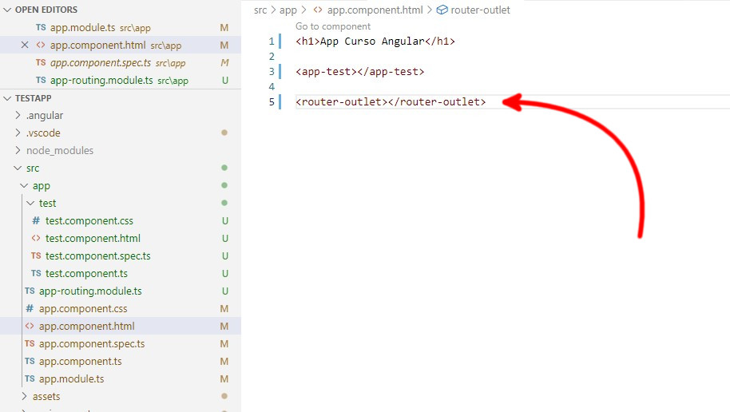
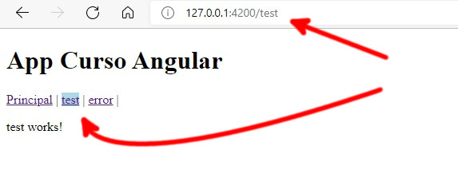

El Routing en angular nos permite cargar componentes segun la ruta que pongamos en el navegador
La diferencia entre usar rutas y hiperenlaces es que las rutas se cargan mucho mas rapido y ademas no hace perder el estado de la aplicacion web
Podemos generar una aplicacion con el routing ya integrado tan pronto como creamos la aplicacion con Angular CLI con el siguiente comando:
ng new <Nombre aplicacion> --routing --defaults
En el caso de que ya tengamos creada una aplicacion y queremos añadirle routing tenemos que realizar una serie de pasos:
ng generate module app-routing --flat --module=app
import { NgModule } from '@angular/core';
import { CommonModule } from '@angular/common';
@NgModule({
declarations: [],
imports: [
CommonModule
]
})
export class AppRoutingModule { }Tenemos que reemplazarlo con lo siguiente:
import { NgModule } from '@angular/core';
import { RouterModule, Routes } from '@angular/router';
import { TestComponent } from './test/test.component';
const routes: Routes = [
{ path: 'test', component: TestComponent }
];
@NgModule({
imports: [RouterModule.forRoot(routes)],
exports: [RouterModule]
})
export class AppRoutingModule { }En este caso puse ya el componente test que estoy usando como prueba, en los import y los paths se deberian de colocar los modulos que tengamos en nuestra aplicacion, lo explico en la siguiente seccion
Para utilizar el routing primero tenemos que declarar las rutas en el archivo app-routing.module.ts, en la constante routes debemos de declarar todas las rutas
const routes: Routes = [
{ path: 'test', component: TestComponent }
];En este caso creamos una ruta para test esta ruta estará asociada a la direccion http://localhost:4200/test en caso del servidor local y asociada al componente TestComponent
Para que se muestre el componente tenemos que asociar el routing en el componente base, utilizando la etiqueta <router-outlet></router-outlet>
<h1>App Curso Angular</h1>
<app-test></app-test>
<router-outlet></router-outlet>En este ejemplo si ejecutamos la aplicacion sin mas (http://127.0.0.1:4200/), vemos esto:
Si ejecutamos con la ruta de test (http://127.0.0.1:4200/test), vemos esto:
El componente test aparece dos veces, la propia que tenemos definida en el componente base y la del routing
Hay dos rutas genericas que podemos usar, que son la ruta por defecto ('') y la ruta del error (**)
En este caso añadimos dos componentes, uno MainPage y otro ErrorPage, y los asociamos con la ruta por defecto y la ruta de error:
const routes: Routes = [
{ path: '', component: MainPageComponent },
{ path: 'test', component: TestComponent },
{ path: '**', component: ErrorPageComponent }
];La ruta por defecto se ejecutara cuando no pongamos ningun añadido en la direccion (http://127.0.0.1:4200)
La ruta de error se ejecutara cuando se ponga una ruta que no este contemplada en ninguna de las otras rutas definidas, http://127.0.0.1:4200/fefes por ejemplo
Al definir las rutas en el archivo app-routing.module.ts una de las cosas que podemos hacer es definir redirecciones tal que asi:
const routes: Routes = [
{ path: 'main', component: MainPageComponent },
{ path: 'test', component: TestComponent },
{ path: '', redirectTo: '/main', pathMatch: 'full' },
{ path: '**', component: ErrorPageComponent }
];En este caso utilizamos la opcion redirectTo para redirigir la pagina principal "/" a la pagina "/main"
Para acceder a las rutas desde enlaces de la propia web podemos usar la directiva routerLink
<nav>
<a [routerLink]="['/main']">Principal</a> |
<a [routerLink]="['/test']">test</a> |
<a [routerLink]="['/error']">error</a> |
</nav>De esta manera se cargaran los componentes asociados con la ruta sin tener que refrescar la pagina y sin perder el estado de la aplicacion web
Otra directiva que podemos usar es routerLinkActive que la podemos utilizar para aplicar un estilo cuando una de las rutas esta activa:
<nav>
<a [routerLink]="['/main']" [routerLinkActive]="['enlaceActivo']">Principal</a> |
<a [routerLink]="['/test']" [routerLinkActive]="['enlaceActivo']">test</a> |
<a [routerLink]="['/error']" [routerLinkActive]="['enlaceActivo']">error</a> |
</nav>En este caso se estaría aplicando el estilo enalceAvtivo que tenemos definido en app.component.css
.enlaceActivo{
background-color: lightblue;
}Y el resultado seria este:
El enlace activo se ve con un fondo azul
Si queremos podemos utilizar la funciona navigate para navegar a rutas desde el código, en vez de utilizar routerlink en un enlace
Primero importamos la clase Router
import { Router } from '@angular/router';
Despues creamos un objeto de tipo Router en el constructor del componente
constructor(private router:Router) { }
Una vez hecho esto ya podemos llamar al metodo navigate desde cualquier parte de nuestro componente, tal que asi:
this.router.navigate(['/main']);
La ruta deberá existir en nuestra tabla de rutas
Angular | Routing